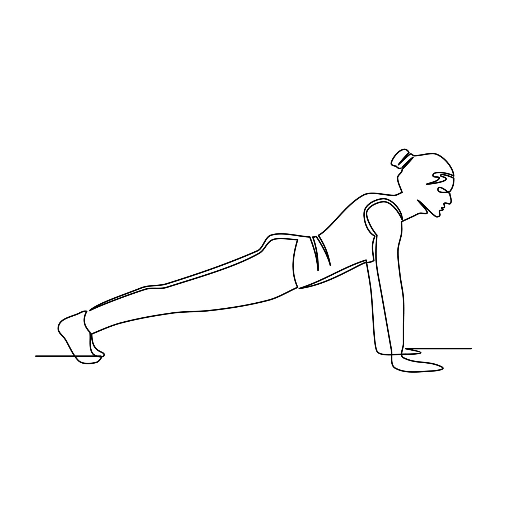

Рады Вас видеть в нашем клубе
Помогаем быть активным, сильным, здоровым без лекарств, уделяя себе всего один
час в день.
Наш клуб
В клубе проходят ежедневные занятия по 40-60 мин. Безопасные, грамотные комплексы на все группы мышц
ведут опытные тренеры.
Регулярные занятия помогают держать фокус внимания на физическом и эмоциональном здоровье. Став
участником клуба Вы попадаете в сообщество единомышленников в чате, где делитесь успехами,
сложностями,
общаетесь и поддерживаете друг друга. Также Вы получаете полное сопровождение от тренеров.
Заниматься
можно с ноутбука, с планшета или с телефона - главное, чтобы был интернет. Записи клубных уроков
сохраняются на клубной платформе. Оценить формат тренировок Вы можете на пробном занятии.
Бесплатно

Йога старт - 1месяц
Абонемент йога на один месяц - ежедневные практики длительностью 40-60мин. Практики с
акцентом на разные направления: здоровье и укрепление спины, гибкость и растяжка,
силовые
комплексы, балансы.
1500₽
Пилатес начало - 1месяц
Ежедневные тренировки 40-60 мин. Общеукрепляющий и развивающий комплекс на все тело.
Абонемент на один месяц поможет Вам определиться с дальнейшим направлением тренировок. В
течение недели тренировки чередуются по степени интенсивности - подходит для любого
уровня
подготовки.
1500₽
Начинающим - 1месяц
Для новичков важен мягкий старт, чтобы втянуться в занятия и не потерять интерес. Наша
специальная программа для подготовки к занятиям с основным потоком - это
сбалансированные
тренировки на все части тела.
1200₽
Йога middle - 3 месяца
Абонемент на три месяца - выгодное предложение для тех, кто решил заниматься своим
здоровьем
всерьез. Ежедневные занятия по 40-60 мин дополнены дыхательными практиками и доступом к
практикам медитации.
4000₽

Пилатес кварто - 3 месяца
Для эффективных тренировок важна регулярность. Абонемент на три месяца - выгодное
предложение для поддержания формы. Также Вам будут доступны дыхательные практики и
медитация
(подборка музыки и медитативные практики голосом).
4000₽
Движение вперед - 3 месяца
Приглашаем развивать активность и выносливость, закреплять результат временем. Три
иесяца -
хороший срок для выработки полезных привычек.
Также Вам будут доступны дыхательные практики и медитация (подборка музыки и
медитативные
практики голосом).
3100₽

С йогой в сердце - 6 месяцев
Для абонемента на 6 месяцев от нас - отличная цена, Вам - здоровое тело и хорошее
настроение. Также будут доступны дыхательные практики и медитация (подборка музыки и
медитативные практики голосом).
7800₽

Пилатес профи - 6 месяцев
Для абонемента на 6 месяцев от нас - отличная цена, Вам - здоровое тело и хорошее
настроение. Также будут доступны дыхательные практики и медитация (подборка музыки и
медитативные практики голосом).
7800₽

Полезная привычка - 6 месяцев
Абонемент на 6 месяцев от нас - отличная цена, Вам - здоровое тело и хорошее
настроение. Также будут доступны дыхательные практики и медитация (подборка музыки и
медитативные практики голосом).
6000₽